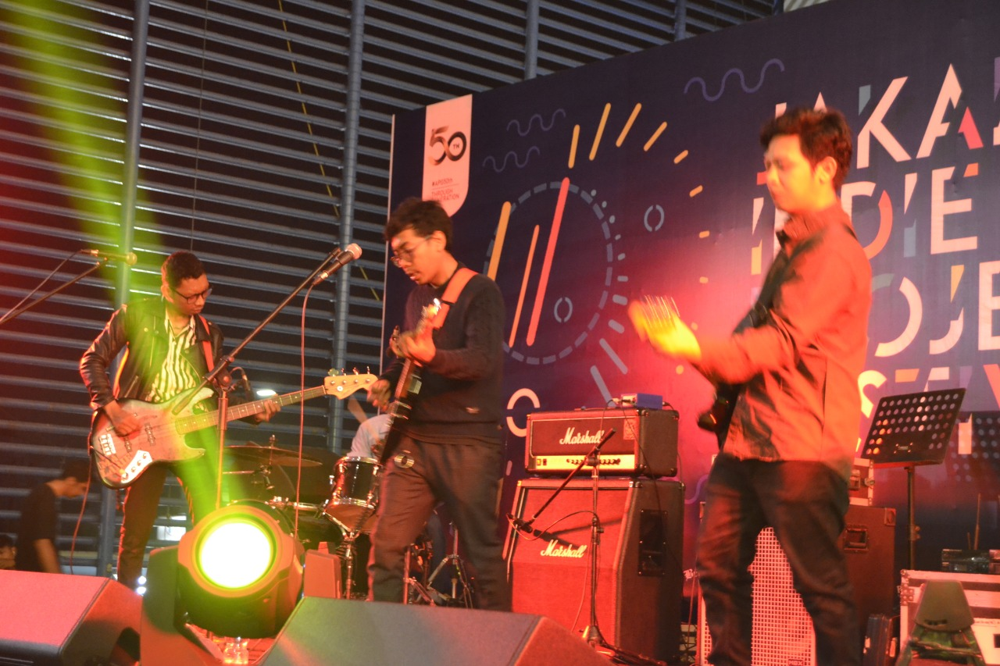
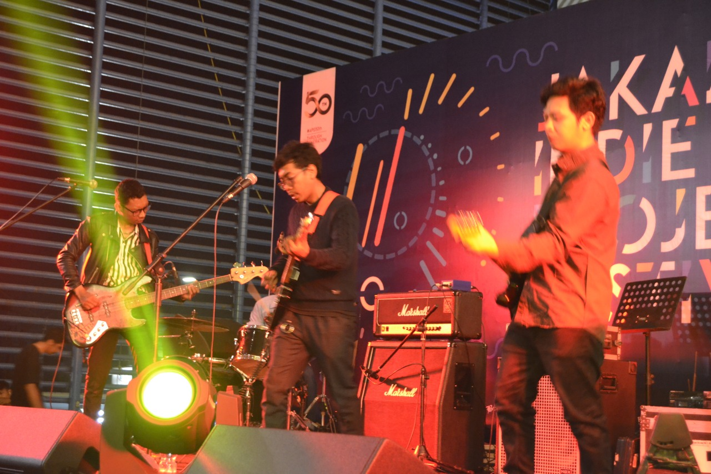

About Us
Formed in May 2010, Four kids from Northpalm street (west-Jakarta) try to find another music in another way in style and color. Mix all genres of music who came from many bands from the U.K.
DISCOGRAPHY : It was formed in 2010, because all the big personnel are in the same neighborhood, and have the same interest in music. The North Palm is taken from the name of their residence area "North Palmerah". Starting from the saturated music that developed in West Jakarta, which is not far from the music Punk, Hardcore, Melodic, and Metal, then they try something new, try to play what music they like into the material of the song they make. They are Guen (Lead Guitar), L (Drum), Phiuz (Bass), and Phebrown (Vocal, Rythm). Trying to give a new nuance to the realm of Indie Music Indonesia.


 
